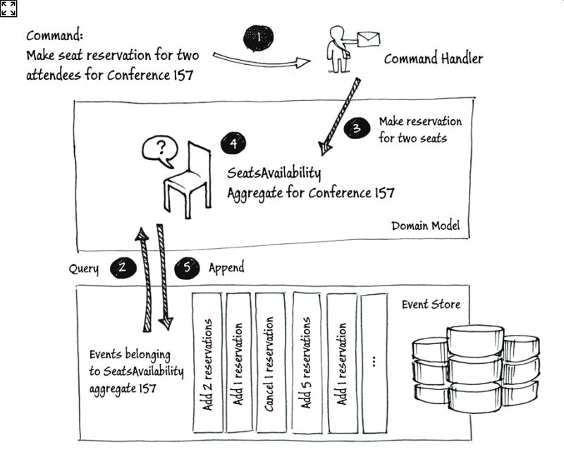
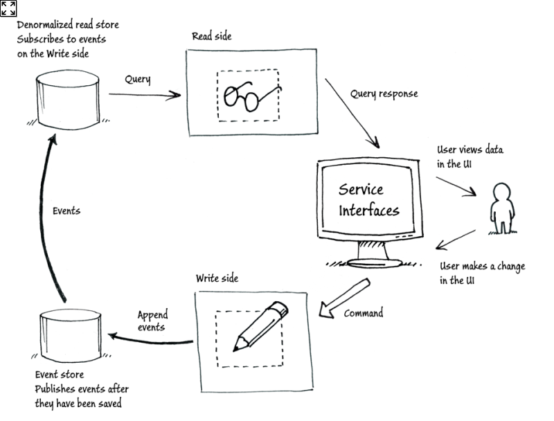

Akka Persistence
CQRS-Event Sourcing
Why I created Process Framework
Agenda
- Refresh CQRS & Event Sourcing (ES)
- Akka Persistence
- Modelling a process
- Process Framework
CQRS
Command Query Responsibility Segregation.

Event Sourcing
source: https://msdn.microsoft.com/en-us/library/jj591559.aspx
Event Sourcing
Remember everything
- Restore state by loading events (if needed)
- Do work
- Save event
- Update internal state with saved event
Ensures written events can be read
Pseudo code
val result = doSomething()
val event = Done(result)
persist(event).andThen {
updateState(event)
}
def updateState = {
case evt: Done => globalState.something = evt.thing}
}
CQRS & ES
source: https://msdn.microsoft.com/en-us/library/jj591559.aspx